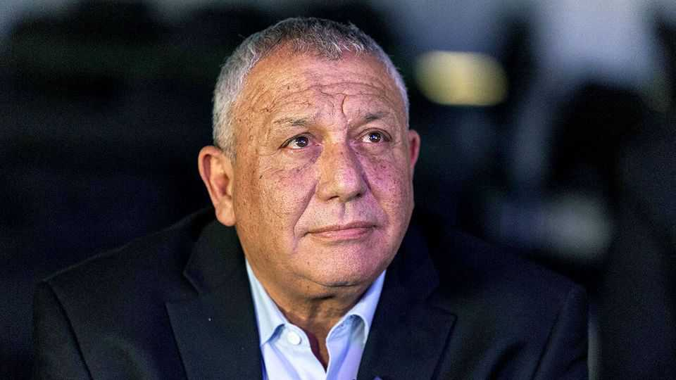

Does Gadi Eisenkot offer Israel a new chance?
Israelis think he may be a genuine alternative to Binyamin Netanyahu
June 25th 2026

With four months until Israelis go to the polls, the main matchup is changing. The coalition of the incumbent prime minister, Binyamin Netanyahu, has long been languishing in the polls. For over a year, the leading challenger has been Naftali Bennett, a right-winger who has supplanted Mr Netanyahu once before, in 2021. But another candidate is overtaking Mr Bennett in many recent polls to become the main threat to the long-serving prime minister: Gadi Eisenkot.
Mr Eisenkot, whose new centrist party is now nearly as popular as Mr Netanyahu’s Likud, has advantages over both Mr Bennett and Mr Netanyahu. He is a former chief of the general staff of the Israel Defence Forces (idf), experience that many Israelis value while their country is still fighting various wars. But he is also a relative newcomer to politics so carries less baggage than his opponents. He was only elected to the Knesset, Israel’s parliament, in 2022. He joined Mr Netanyahu’s war cabinet after the October 7th attacks but resigned after eight months.
Early in the war in Gaza, he wrote to his war-cabinet colleagues to criticise Mr Netanyahu for “avoiding significant decisions”. He warned that Israel risked fighting a long and inconclusive war and would fail to destroy the military and governing capabilities of Hamas, Gaza’s Islamists.
Over two years later he has been proved right. The idf still occupies over half of Gaza, while Hamas remains entrenched in the rest of the territory, continuing to hold sway over the 2m Gazans. Israel’s attacks have destroyed much of Gaza and killed over 73,000, most of whom were civilians. The war has seriously damaged Israel’s international standing and alliances.
Mr Eisenkot’s criticism at the time was both prescient and poignant. His son, Gal, a 25-year-old reserve soldier, had been killed in the fighting two months earlier. Meanwhile, Israel has continued to blunder through endless bloody wars, making few strategic gains. Mr Netanyahu is now at loggerheads with the president of America, Israel’s most important ally.
As the electoral day of reckoning draws near, two questions loom: does Mr Eisenkot represent a true alternative to Mr Netanyahu; and can he win?
Politically he is difficult to pin down. He has voted for both the left-leaning Labour and right-wing Likud parties. It is not clear what he stands for militarily either. He is regarded as the author of Israel’s Dahiyeh Doctrine, which has earned Israel international condemnation and accusations of war crimes. The doctrine calls for heavy air strikes on civilian infrastructure to destroy its enemies’ strongholds. But as idf chief during a spate of stabbings by young Palestinians in 2015 and 2016, he opposed a shoot-to-kill policy, drawing attacks from the Israeli right wing.
For all his criticism of Mr Netanyahu, he initially supported the wars in Gaza, Lebanon and Iran. The difference, he argues, is that he favoured ending them much sooner and following up with diplomatic initiatives. Above all, he thinks Mr Netanyahu’s ambitions to “redraw the map of the Middle East” were never realistic and that the prime minister was motivated by concerns for his own political survival.
Israel’s audition for Mr Netanyahu’s replacement has been lengthy. For a while after October 7th, people looked to another former general, Benny Gantz, whose party Mr Eisenkot joined when he entered politics. But he failed to stand up to the prime minister and his popularity faded. Then Mr Bennett seemed to be on the rise. His star now looks to be falling.
Unlike those two, Mr Eisenkot does not try to match the silver-tongued Mr Netanyahu’s speechifying or his feisty interviews with the foreign press (his English is halting). He wants to convince Israelis he has serious plans to deal with the security and diplomatic dilemmas facing Israel, as well as the bitter debates over the role of religion in the state and the balance of power between the courts and elected officials. His party promises a detailed manifesto soon. That may show whether he is really an alternative. Then he will face his biggest test: selling himself to the Israeli public. ■
Sign up to the Middle East Dispatch, a weekly newsletter that keeps you in the loop on a fascinating, complex and consequential part of the world.